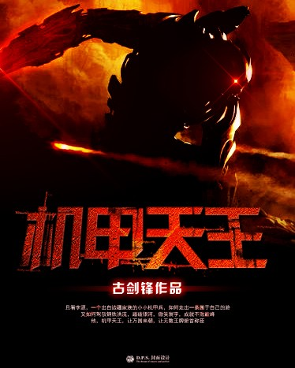
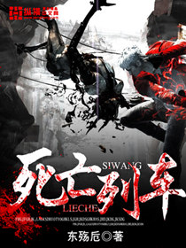
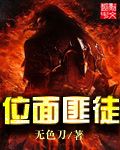
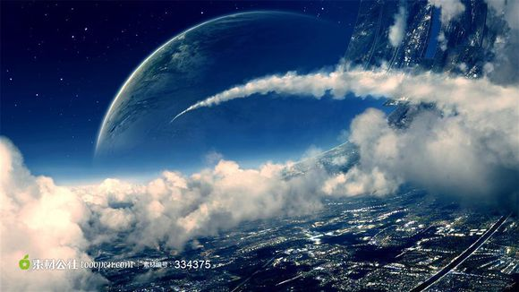

返回
首页
分类
排行
全本
阅读记录
书架
科幻小说

机甲天王
作者：古剑锋
更新至：
第1034章 改天换地 完
简介：
神秘至宝，彪悍美女，狂野机甲，统统纳入怀中。 且看李源，一个出自边疆家族的小小机甲兵，如何走出一条属于自己的路。又如何驾驭钢铁洪流，踏破银河，傲笑寰宇，成就不败巅峰。他，机甲天王，让万国来朝，让无数王牌俯首称臣。 各位书友要是觉得《机甲天王》还不错的话请不要忘记向您QQ群和微博里的朋友推荐哦！
白钢
作者：楠乡
更新至：
第五幕 渴血天使 11.逐影
简介：
暂无...... 各位书友要是觉得《白钢》还不错的话请不要忘记向您QQ群和微博里的朋友推荐哦！
穿越末世之外挂无敌
作者：逍遥至上
更新至：
第四十二章 进化丧尸
简介：
修改器功能介绍：无限生命；一击必杀；无限弹药--------------------------------------------“妹子！跟着哥，哥包你吃得好，睡的香.....”“次奥，老哥，妹子全被你抢了，我干什么？”“不是还有那没多吗？”“你行不行啊？？？？”“毛线，男人永远不能说不行！！行了行了，你老哥我是这么狭隘的人吗？？？？”“是！！”................. 各位书友要是觉得《穿越末世之外挂无敌》还不错的话请不要忘记向您QQ群和微博里的朋友推荐哦！
异能侦探团
作者：夏鸢工作室
更新至：
第三章——蛊术由来
简介：
夜幕降临，黑暗如潮水漫入。R市于黑暗中褪尽往日的活力与朝气，显露出沉淀于此埋藏百年的人类心底的罪恶与黑暗……这里是邪恶滋生的温床，但是正义却在一群不凡少年身上显露。异能侦探团是否能够找到那一根致命的红线……萧晨能否解开千年来隐藏在黑暗里的悬疑之案？ 各位书友要是觉得《异能侦探团》还不错的话请不要忘记向您QQ群和微博里的朋友推荐哦！
灵律神界之悲城
作者：未末了
更新至：
第39章 训练成果 整装待发
简介：
本故事讲述着身为“灵调者”负责打倒蜃(怪物)保护着人类的，然而这一切被人类组织“天梯”却做出了违抗伦理的事情将人体蜃化的实验。城市中大部分人变为了蜃，只有小部分的存活者，而存活者们想办法活下去的故事。你说，只要下次睁开眼就能再见到你就足够了。实现了那又如何？我会开心吗？不，那只会产生无数的伤痕。因为下一刻你就…我要打破这个城镇的诅咒。我要…那时候你已经回不来了。 各位书友要是觉得《灵律神界之悲城》还不错的话请不要忘记向您QQ群和微博里的朋友推荐哦！
神级契约者
作者：乌鸦的马甲
更新至：
第一百四十九章 完结
简介：
这是未来的世界，过去的文明已经消失 主神再次降临，打开进化的大门，过去的传说世界一一呈现 金古黄粱的武侠世界，漫威DC的奇诡世界，僵尸吸血鬼的神话世界成为所有人躲避不了的进化世界 他便在这个时候转生在了进化的世界，面对无数未来的群英，靠着对剧情细节的全知全觉，成了唯一的神级契约者 各位书友要是觉得《神级契约者》还不错的话请不要忘记向您QQ群和微博里的朋友推荐哦！
无限之未来系统
作者：黯夜魔导师
更新至：
第两百九十六章 重聚
简介：
“叮，未来系统已启动，亲爱的宿主，请问有什么愿望需要实现的吗？” “我想要有房有车有钱有老婆，可以吗？” “可以的，亲爱的宿主。” “我想要高高在上、万人敬仰、妻妾成群，可以吗？！” “可以的，亲爱的宿主。” “我想要拥有拳破天空、脚碎大地，挥挥手就能移山填海的强大实力，可以吗？！！” “可以的，亲爱的宿主。” “那么，帮我全都实现吧！！！” “好的宿主，只要您支付99999999的愿力点数就能立刻满足您的需求。” 看着系统面板中自己拥有愿力点数显示着极为刺目的“0”，夜天星就明白，就算拥有了未来系统可以改变自己的未来，还是需要自己不断的努力才行啊。 各位书友要是觉得《无限之未来系统》还不错的话请不要忘记向您QQ群和微博里的朋友推荐哦！
至高萌座
作者：深海镇守府
更新至：
第一百六三章 吾不想死
简介：
行走在黑暗的空间，品尝最美味的恐惧，穿行于人类幻想衍生出来的世界，决战最强传说与神话。 无限的幻想，至高的王座，成神的道路，我在前行。 咳咳咳，这个简介是不是太中二了一点，具体说下大概内容吧。 （五十万字内出现的将会有惊爆游戏BTOOM，织田信奈的野望，罪恶王冠，物语系列，战国兰斯，暂且先这样吧，这可能是我最后一本小说，所以不会太监，请放心……） 如果客官觉得还过意得去的话，不妨给个推荐和收藏，就当养肥的肥料好了。 各位书友要是觉得《至高萌座》还不错的话请不要忘记向您QQ群和微博里的朋友推荐哦！
末日新世界
作者：暗黑茄子
更新至：
完本感言
简介：
从天而降的卡片带来了末日灾难，也将世界带入了新的纪元。 分享书籍《末日新世界》作者：暗黑茄子 各位书友要是觉得《末日新世界》还不错的话请不要忘记向您QQ群和微博里的朋友推荐哦！
从电影世界中走出的强者
作者：小陀螺
更新至：
第十八章 小丑在行动
简介：
一颗神秘的黑色珠子，让陈朗走进了一个不一样的世界。 少林寺里撞过钟； 四大名捕里抓过贼； 复联里面当过英雄； 超人之中和超人一起拯救地球！ 穿梭在无尽的电影世界之中，留下无数的足迹和传说，谱写一个又一个传奇！ －－－－－－－－－－－－－－－－－－－－－－－－－－－－－ PS1：读者群：398110585 PS2：捡起节操，重新出发 PS3：求别打脸 各位书友要是觉得《从电影世界中走出的强者》还不错的话请不要忘记向您QQ群和微博里的朋友推荐哦！
无限之升级系统
作者：东东是个胆小鬼
更新至：
完本感言
简介：
普通的长矛能升级成雷神之矛，几百级的基础拳法也能轻松打爆地球！ 召唤吞天巨狼、铠甲暴熊、巨神石魔，小弟助我纵横！ 五神变百变如神，影子武士、梦魇灵体、魔体、圣剑化身，一人便能化身漫天神佛！ 万剑冢、武神图、十二星宫、九宫道图、无字天碑，通天之塔造就通天之路！ 手握星空法杖，掌控星空圣殿，就是这片宇宙星空下的唯一王者! 这是一个有着恋姐癖的少年靠着升级系统在通天塔的世界中纵横无敌的故事。 PS:有三十万字的存稿，请大家放心收藏。 分享书籍《无限之升级系统》作者：东东是个胆小鬼 各位书友要是觉得《无限之升级系统》还不错的话请不要忘记向您QQ群和微博里的朋友推荐哦！
苗疆道事
作者：南无袈裟理科佛
更新至：
《苗疆道事》实体书出版和众筹活动 依旧是苗疆,不一样...
简介：
百年前的今天大拿尽出，群星闪耀，一时间风起云涌； 百年后的当下天地大劫，众神陨落，叹天下几人能活？ 一百年前是李道子、屈阳和洛十八的时代，一百年后，左道一出，天下谁能与之争锋？而在这百年之间，却是翻天覆地的年代，这里面有着什么人，在演绎着何等的慷慨悲歌呢？ 我书写的不是陈二蛋的个人传记，而是一个时代，以及身处于这个大时代之中，那些一代宗师的故事。 苗疆巫蛊、九尾白狐、走阴遁体、转世重修、转战万里、黄山龙蟒、百鬼夜行……黑手双城和他的七个小伙伴，将为你娓娓叙述，陈老魔到底是怎么炼成的！ 各位书友要是觉得《苗疆道事》还不错的话请不要忘记向您QQ群和微博里的朋友推荐哦！

死亡列车
作者：东殇卮
更新至：
番外4 终
简介：
爱丽丝，铁暴龙，活死人，血惊魂…… 黑色的列车在残骸中行进！ 带着幸或不幸的旅客进入一个个血腥的世界。 ＊＊＊＊＊＊＊＊＊＊＊＊＊＊＊＊＊＊＊＊＊＊＊＊ （百万字完结作品，老作者，买断作品，求红票，收藏） 各位书友要是觉得《死亡列车》还不错的话请不要忘记向您QQ群和微博里的朋友推荐哦！
不规则游戏
作者：极度虚伪
更新至：
第六十三章 警匪游戏 7
简介：
这是不同于其他游戏的网络游戏，智力与智力的对抗，身体与身体的对抗。背叛与欺骗的竞价游戏，斗智斗勇的警匪游戏，死亡与生存一念之间的夺命公交车，竞技场一般的千人大迷宫，恐怖与悬念重重的黑暗童话《小红帽》.....让我们一起走入《不规则游戏》进行一场场充满推理和… 各位书友要是觉得《不规则游戏》还不错的话请不要忘记向您QQ群和微博里的朋友推荐哦！

位面匪徒
作者：无色刀
更新至：
98.暂时的终结
简介：
我想像蓝染那样正直， 像短笛那样善良， 像伊藤诚那样纯情， 像多弗朗明哥那样爱好和平…… 然而正文与以上人物一点关系都没有，这就是一个在无限位面中把妹的故事。 各位书友要是觉得《位面匪徒》还不错的话请不要忘记向您QQ群和微博里的朋友推荐哦！
灭世之门
作者：黑暗荔枝
更新至：
第四百五十九章 好好活着
简介：
生化危机、天灾降临…… 丧尸、全球冰冻…… 电影院里，游戏中，人类每天都在接触着这样的“末日”。 但其实并没有人真的相信这些…… 苏黎风从小就是一个可以预知到灾难的人，但他却从未想过有一天自己竟然会预知到世界末日： 百日之后，全球沦陷。 人类，将会灭绝。 苏黎风猛地深吸了一口气，从预知画面中清醒了过来 各位书友要是觉得《灭世之门》还不错的话请不要忘记向您QQ群和微博里的朋友推荐哦！
龙国之崛起
作者：路行者1号
更新至：
第十章 猎影行动 三
简介：
叶扬，自小父母死于车祸，二叔叶城收养了他，并把他当做亲生儿子一样对待，总是把好的先给他。十五年后，叶扬长大成人，因情场失意而独自一人去露营，当遭遇意外，生命垂危，生死关头遇到外星人把他给救了。当叶扬醒来时，他他发现自己的身体充满了力量，脑子里多了很多不明白的东西。他会用这些东西做什么呢，他是怎样用这些东西帮助龙国崛起的呢，他又是怎样用这些东西把龙国变成一个超级大国的呢。。。。。。 各位书友要是觉得《龙国之崛起》还不错的话请不要忘记向您QQ群和微博里的朋友推荐哦！

星海长征
作者：六字真言
更新至：
第8章 强子装甲
简介：
光锥之内是命运，射程之内是尊严！流浪星海，见证文明的兴衰与壮烈，感受行星毁灭时的灿烂瞬间，亲历拆解中子星的震撼，无垠的宇宙必有无垠的胸怀！搏击深空，感受宇宙战争的无情与冷酷，无数鲜血挥洒于战场，在恒星的见证下化作星尘，英灵与星辰同在！跃出行星，穿越… 各位书友要是觉得《星海长征》还不错的话请不要忘记向您QQ群和微博里的朋友推荐哦！
鬼事专门店
作者：夏颜轩
更新至：
第十一章:平复战乱
简介：
一个穷屌丝,却身负重命,诡异的身份,却身陷迷途,一步又一步的险棋,一次又一次的重生,他,能否踏破虚空,凌驾于世间的巅峰?他,能否不负众望,完成所给予的任务? 各位书友要是觉得《鬼事专门店》还不错的话请不要忘记向您QQ群和微博里的朋友推荐哦！
明宇三界大陆
作者：公子小宇
更新至：
第二卷人界危机第八章鬼王陨 回家 大结局
简介：
职业的网游玩家林宇同学，下雨天躲在家中玩着电脑。可是却被突如其来的一道闪电击中了信号天线，高强度电压瞬间就让林宇的电脑来了一场大爆炸！爆炸过后，林宇同学不见了。。。。。。 各位书友要是觉得《明宇三界大陆》还不错的话请不要忘记向您QQ群和微博里的朋友推荐哦！
首页
上页
尾页
输入页数
(第10/10页)当前20条/页